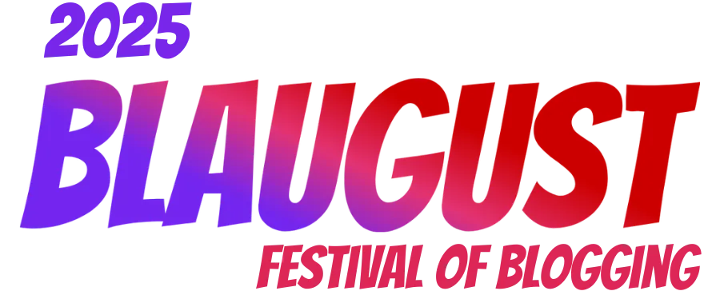

参加 Blaugust 2025

I don't know if there will be non-Chinese users reading my blog.
If you are, you can try using Immersive Translate to translate and view the articles.
Welcome & Thank you!
｡:.ﾟヽ(*´∀`)ﾉﾟ.:｡
报名了 Blaugust，虽然没有强制一定要写多少东西，但既然参加了，总归要写一些什么。
我是从 Juha-Matti Santala 的文章 Blaugust 2025 starts August 1st 了解到 Blaugust 的。
我觉得这个活动挺有趣的，我也想多写一些博客文章，所以就参加了。
但我应该没办法每天都写，不想给自己太多的压力，所以我的目标是在 8 月份至少写 5 篇文章。
我的博客内容目前主要是 zine，一份定期更新的刊物，整理一段时间里我看到的文章和我觉得有趣的东西。目前已经写到 zine#41 了。
此外还有一些关于 Emacs 和前端相关的技术文章，以及一些生活记录。
多亏 owls 整理的 Blaugust 2025 OPML，我现在订阅了很多参加了 Blaugust 的博客，很好奇大家会写点什么。1
每个博客的样式都各不相同，看到不同的样式也很有趣，或许我还能抄一些有趣的设计。
如果你对我的博客好奇的话，也可以看看 Answer: 博客作者呀，我想采访你这 9 个问题！。
Happy Blaugust!
脚注:
1
但是列表好长，有点看不过来 _(:3 」∠)_